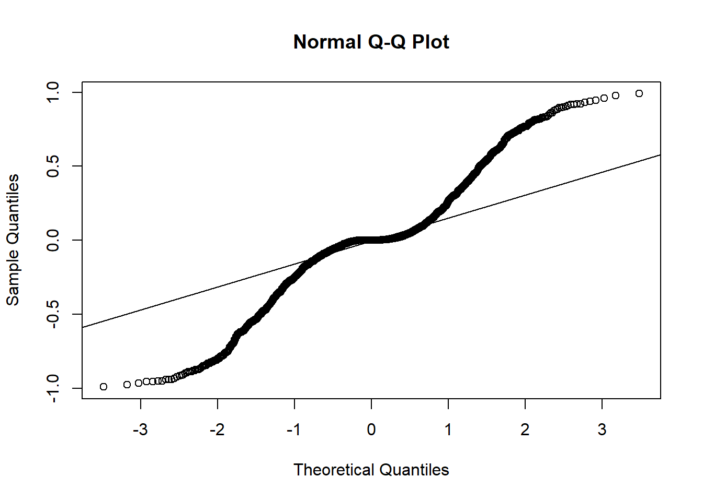
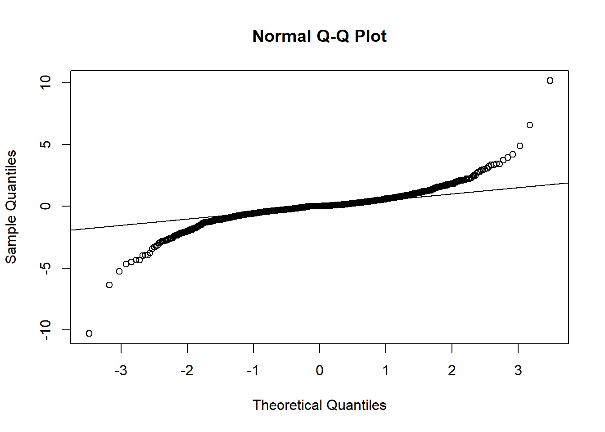

library(GLMsData)
library(tidyverse)1 Introduction
In this post, we are going to discuss the diagnostic measures of Generalized Linear Model (GLM). We will start by stating the assumptions of GLM. Then, we are going to simulate fake data from binary logistic regression model. Then, we construct a wrong model by misspecifying certain parts of the model. We will use these models to show how various residual procedure are used to identify any model misfit. But, before that, different types of residuals will be discussed followed by leverages in GLM. Graphical plots will be used to check the model assumptions. A brief introduction of outliers and influential measures will be carried out before discussing the remedial measures.
2 Simulate data
Loading required packages-
set.seed(22)
b0 = 1.5
b1 = 2
b2 = 3
b3 = 2.5
n=2000
x1 = rnorm(n, -2)
x2 = rnorm(n)
x3 = rbinom(n, 1, 0.4)
z = b0 + b1*x1 + b2*x2*x2 + b3*x3
pr = 1/(1+exp(-z))
y = rbinom(n, 1, pr)
sim_data = data.frame(x1, x2, x3, y)
head(n*pr, 15) [1] 1999.9980 1995.1963 787.8470 1088.7494 1726.4158 1955.5294 1213.3687
[8] 150.0487 1435.7881 1350.0661 425.5808 374.9952 1238.4609 1817.1878
[15] 394.2398# cbind(pr, n*pr)Correct Model- \[ Y = \beta_0 + \beta_1 x_1 + \beta_2 x_2^2 + \beta_3 x_3 + \epsilon \]
m1 = glm(y ~ x1 + I(x2^2) + x3, family = "binomial", data = sim_data)
summary(m1)
Call:
glm(formula = y ~ x1 + I(x2^2) + x3, family = "binomial", data = sim_data)
Deviance Residuals:
Min 1Q Median 3Q Max
-3.05745 -0.48100 0.02173 0.45997 3.04796
Coefficients:
Estimate Std. Error z value Pr(>|z|)
(Intercept) 1.7073 0.1861 9.174 <2e-16 ***
x1 2.0261 0.1077 18.808 <2e-16 ***
I(x2^2) 2.7699 0.1551 17.855 <2e-16 ***
x3 2.4809 0.1648 15.058 <2e-16 ***
---
Signif. codes: 0 '***' 0.001 '**' 0.01 '*' 0.05 '.' 0.1 ' ' 1
(Dispersion parameter for binomial family taken to be 1)
Null deviance: 2735.5 on 1999 degrees of freedom
Residual deviance: 1329.5 on 1996 degrees of freedom
AIC: 1337.5
Number of Fisher Scoring iterations: 7Let’s make two wrong models.
Wrong Model 1 (w1): Missing the quadratic term \[ Y = \beta_0 + \beta_1 x_1 + \beta_2 x_2 + \beta_3 x_3 + \epsilon \]
w1 = glm(y ~ x1 + x2 + x3, family = "binomial", data = sim_data)Wrong Model 2 (w2): Missing x3 \[ Y = \beta_0 + \beta_1 x_1 + \beta_2 x_2^2 + \epsilon \]
w2 = glm(y ~ x1 + I(x2^2), family = "binomial", data = sim_data)3 Assumptions of GLM
The correct link function g()is used.
All important explanatory variables are included, and each variable is included in the linear predictor on the correct scale.
The responses yi assume to come from an exponential family (e.g. binomial, poisson, normal, gamma etc). They don’t need to come from normal distribution strictly.
The responses Y1, Y2,…, Yn are independently distributed.
Errors need to be independently distributed. But they don’t need to be normally distributed.
A GLM does not assume linear relationship between explanatory variables and response variable, rather, it assumes linear rel’ between expected response or some function of expected response (as link function) and explanatory variables, i.e. \(\eta\) = \(log \left( \frac{ \pi_i }{ 1- \pi_i} \right)\) = logit(\(\pi_i\))
4 Residuals
4.1 Response Residuals (Rr)
Response Residual is the difference between the response yi and \(\mu_i\), i.e. Rri = yi - \(\hat\mu_i\).
fit = predict(m1, type = "response")
head(y-fit) 1 2 3 4 5 6
2.722883e-06 2.131567e-03 5.630650e-01 4.550829e-01 1.419348e-01 2.209112e-02 Alternative approach using the residuals() function.
residuals(m1, type = "response") %>% head()For linear model, Rr need to be normally distributed with mean 0 and constant variance. For GLM, it’s not necessarily true always.
rr = residuals(m1, type = "response")
qqnorm(rr)
qqline(rr)
We need the Rr to behave like the Rr in linear model, so that we can evaluate our GLM model fit. But, the above qqnorm plot of the correct model tells us that the Rr in GLM are not following normal distribution. This type of residuals are not sufficient for assessing GLM model fit and hence a modification is required.
4.2 Pearson Residuals (Pr)
Pearson residuals (Pr) are defined as the difference between the observed and expected responses and divided by the square root of the estimated variance of \(y_i\). Mathematically, \[ \Pr_i = \frac{(y_i-\hat\mu_i)} {\sqrt{\hat Var(\\y_i)}} \] For logistic regression, \(\Pr_i = \frac{y_i - \hat p_i} {\sqrt{\hat p_i (1-\hat p_i)}}\).
For poisson regression, \(\Pr_i = \frac{y_i - e^{x_i\hat \beta_i}} {\sqrt{e^{x_i\hat \beta_i}}}\).
Note: \(\sum \Pr_i^2 = \frac{(y_i-\hat\mu_i)^2} {\hat Var(\\y_i)}.\) When the GLM is the model corresponding to independence for cells in a two-way contingency table, this is the Pearson Chi-squared statistic \(\chi^2\) for testing independence. (“Generalized Linear Models,” n.d.)
The following plot is showing that Pearson residuals deviate from normality when it comes from logistic regression model.
pr = residuals(m1, type = "pearson")
qqnorm(pr)
qqline(pr)# plot(m1)4.2.1 Standardized Pearson Residual (spr):
The denominator of the pearson residual accounts for the variability in \(y_i\), but not for the variability for \(\hat \mu_i\). The spr solves this issue by dividing \((y_i - \hat \mu_i)\) by its standard error, SE. Mathematically, \[ spr = \frac{(y_i - \hat \mu_i)} {SE} = \frac{(y_i - \hat \mu_i)} {\sqrt{\hat Var(y_i)(1-h_i)}}; \] here \(h_i\) represents leverage.
pr1 = residuals(m1, type = "pearson")/sqrt(1 - hatvalues(m1))
qqnorm(pr1)
qqline(pr1)
4.3 Deviance Residuals (DR)
References
“Generalized Linear Models.” n.d. In, 65–98. John Wiley & Sons, Inc. https://doi.org/10.1002/9780470114759.ch3.